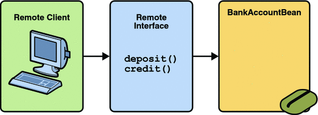

Defining Client Access with Interfaces
The material in this section applies only to session beans and not to message-driven beans. Because they have a different programming model, message-driven beans do not have interfaces that define client access.
A client can access a session bean only through the methods defined in the bean’s business interface. The business interface defines the client’s view of a bean. All other aspects of the bean (method implementations and deployment settings) are hidden from the client.
Well-designed interfaces simplify the development and maintenance of Java EE applications. Not only do clean interfaces shield the clients from any complexities in the EJB tier, but they also allow the beans to change internally without affecting the clients. For example, if you change a session bean from a stateless to a stateful session bean, you won’t have to alter the client code. But if you were to change the method definitions in the interfaces, then you might have to modify the client code as well. Therefore, it is important that you design the interfaces carefully to isolate your clients from possible changes in the beans.
Session beans can have more than one business interface. Session beans should, but are not required to, implement their business interface or interfaces.
When you design a Java EE application, one of the first decisions you make is the type of client access allowed by the enterprise beans: remote, local, or web service.
Remote Clients
A remote client of an enterprise bean has the following traits:
It can run on a different machine and a different Java virtual machine (JVM) than the enterprise bean it accesses. (It is not required to run on a different JVM.)
It can be a web component, an application client, or another enterprise bean.
To a remote client, the location of the enterprise bean is transparent.
To create an enterprise bean that allows remote access, you must do one of the following:
Decorate the business interface of the enterprise bean with the @Remote annotation:
@Remote public interface InterfaceName { ... }Decorate the bean class with @Remote, specifying the business interface or interfaces:
@Remote(InterfaceName.class) public class BeanName implements InterfaceName { ... }
The remote interface defines the business and life cycle methods that are specific to the bean. For example, the remote interface of a bean named BankAccountBean might have business methods named deposit and credit. Figure 20-1 shows how the interface controls the client’s view of an enterprise bean.
Figure 20-1 Interfaces for an Enterprise Bean with Remote Access
Local Clients
A local client has these characteristics:
It must run in the same JVM as the enterprise bean it accesses.
It can be a web component or another enterprise bean.
To the local client, the location of the enterprise bean it accesses is not transparent.
The local business interface defines the bean’s business and life cycle methods. If the bean’s business interface is not decorated with @Local or @Remote, and the bean class does not specify the interface using @Local or @Remote, the business interface is by default a local interface. To build an enterprise bean that allows only local access, you may, but are not required to do one of the following:
Annotate the business interface of the enterprise bean as a @Local interface. For example:
@Local public interface InterfaceName { ... }Specify the interface by decorating the bean class with @Local and specify the interface name. For example:
@Local(InterfaceName.class) public class BeanName implements InterfaceName { ... }
Deciding on Remote or Local Access
Whether to allow local or remote access depends on the following factors.
Tight or loose coupling of related beans: Tightly coupled beans depend on one another. For example, if a session bean that processes sales orders calls a session bean that emails a confirmation message to the customer, these beans are tightly coupled. Tightly coupled beans are good candidates for local access. Because they fit together as a logical unit, they typically call each other often and would benefit from the increased performance that is possible with local access.
Type of client: If an enterprise bean is accessed by application clients, then it should allow remote access. In a production environment, these clients almost always run on different machines than the Application Server. If an enterprise bean’s clients are web components or other enterprise beans, then the type of access depends on how you want to distribute your components.
Component distribution: Java EE applications are scalable because their server-side components can be distributed across multiple machines. In a distributed application, for example, the web components may run on a different server than do the enterprise beans they access. In this distributed scenario, the enterprise beans should allow remote access.
Performance: Due to factors such as network latency, remote calls may be slower than local calls. On the other hand, if you distribute components among different servers, you may improve the application’s overall performance. Both of these statements are generalizations; actual performance can vary in different operational environments. Nevertheless, you should keep in mind how your application design might affect performance.
If you aren’t sure which type of access an enterprise bean should have, choose remote access. This decision gives you more flexibility. In the future you can distribute your components to accommodate the growing demands on your application.
Although it is uncommon, it is possible for an enterprise bean to allow both remote and local access. If this is the case, either the business interface of the bean must be explicitly designated as a business interface by being decorated with the @Remote or @Local annotations, or the bean class must explicitly designate the business interfaces by using the @Remote and @Local annotations. The same business interface cannot be both a local and remote business interface.
Web Service Clients
A web service client can access a Java EE application in two ways. First, the client can access a web service created with JAX-WS. (For more information on JAX-WS, see Chapter 16, Building Web Services with JAX-WS.) Second, a web service client can invoke the business methods of a stateless session bean. Message beans cannot be accessed by web service clients.
Provided that it uses the correct protocols (SOAP, HTTP, WSDL), any web service client can access a stateless session bean, whether or not the client is written in the Java programming language. The client doesn’t even “know” what technology implements the service: stateless session bean, JAX-WS, or some other technology. In addition, enterprise beans and web components can be clients of web services. This flexibility enables you to integrate Java EE applications with web services.
A web service client accesses a stateless session bean through the bean’s web service endpoint implementation class. By default, all public methods in the bean class are accessible to web service clients. The @WebMethod annotation may be used to customize the behavior of web service methods. If the @WebMethod annotation is used to decorate the bean class’s methods, only those methods decorated with @WebMethod are exposed to web service clients.
For a code sample, see A Web Service Example: helloservice.
Method Parameters and Access
The type of access affects the parameters of the bean methods that are called by clients. The following topics apply not only to method parameters but also to method return values.
Isolation
The parameters of remote calls are more isolated than those of local calls. With remote calls, the client and bean operate on different copies of a parameter object. If the client changes the value of the object, the value of the copy in the bean does not change. This layer of isolation can help protect the bean if the client accidentally modifies the data.
In a local call, both the client and the bean can modify the same parameter object. In general, you should not rely on this side effect of local calls. Perhaps someday you will want to distribute your components, replacing the local calls with remote ones.
As with remote clients, web service clients operate on different copies of parameters than does the bean that implements the web service.
Granularity of Accessed Data
Because remote calls are likely to be slower than local calls, the parameters in remote methods should be relatively coarse-grained. A coarse-grained object contains more data than a fine-grained one, so fewer access calls are required. For the same reason, the parameters of the methods called by web service clients should also be coarse-grained.